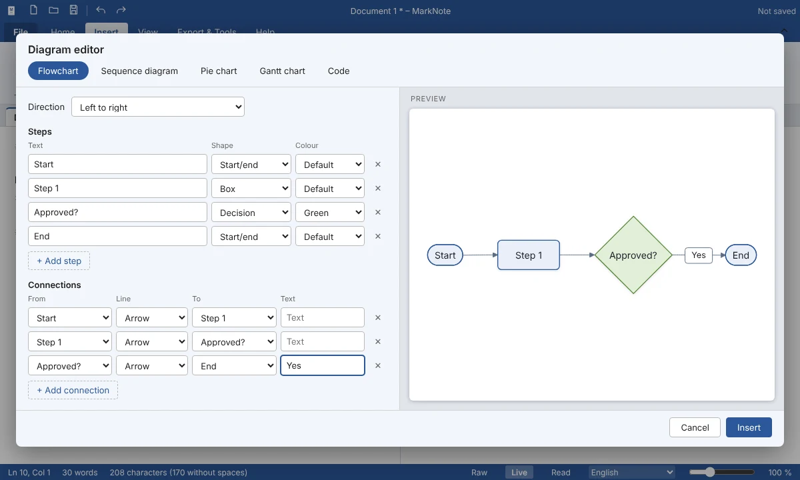
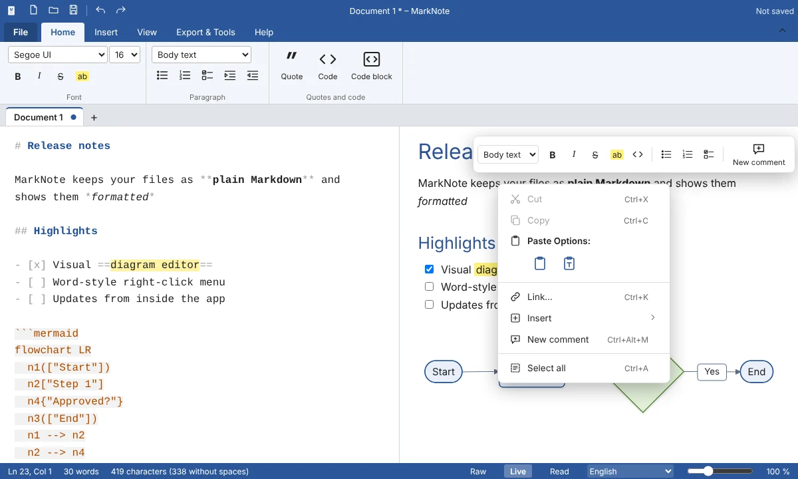
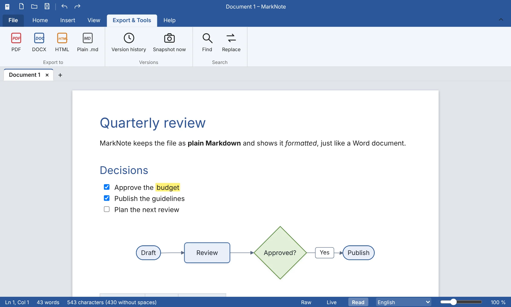

01 / SKRIV
Skriv Markdown, se dokumentet.
Markdown till vänster, den formaterade sidan till höger. Skriv i vilken ruta du vill, så följer den andra med och du kan arbeta som du föredrar.

En Markdown-redigerare och -visare med menyfliksområdet, snabbmenyn och den blå namnlisten du känner igen från Word, och vanliga .md-filer under ytan. Skapa diagram utan kod, gör om Word-dokument till Markdown och exportera till PDF och DOCX.
— Rundturen på två minuter
Alla funktioner på två minuter, med engelsk speakerröst och undertexter.
01 — Idén
Filen förblir enkel Markdown som alla program kan läsa. MarkNote sätter den som ett dokument medan du skriver.
02 — Så fungerar det
Fyra ögonblick som får Markdown att kännas som ett ordbehandlingsprogram.
01 / SKRIV
Markdown till vänster, den formaterade sidan till höger. Skriv i vilken ruta du vill, så följer den andra med och du kan arbeta som du föredrar.
02 / DIAGRAM
Lägg till steg, välj former och färger, koppla ihop dem och sätt text på pilarna. Flödesscheman, sekvens-, cirkel- och Gantt-diagram ritas medan du skriver.

03 / FORMATERA
Ett miniverktygsfält för rubriker, fetstil, markering och listor, inklistringsalternativ, en Infoga-meny och Ny kommentar, precis där musen redan är.

04 / DELA
Läsläget visar dokumentet som en sida. Exportera till en riktig DOCX, en PDF eller en fristående webbsida, med diagram och formler.

03 — Allt ingår
Rå Markdown med syntaxfärger, liveförhandsvisning sida vid sida och ett rent läsläge.
Flödesscheman, sekvens-, cirkel- och Gantt-diagram från enkla tabeller, sparade som Mermaid.
Menyfliksområde, blå namnlist, snabbmeny med miniverktygsfält och knappbeskrivningar som lär ut syntaxen.
Öppna en .docx- eller .html-fil så konverteras den till Markdown, bilder inräknade.
En PDF, ett riktigt Word-dokument (.docx), en fristående webbsida eller ren .md.
Interaktiv tabellbyggare, relativa bildsökvägar, fotnoter, dolda kommentarer och LaTeX.
Automatiska ögonblicksbilder som du kan återställa, och flera dokument öppna samtidigt i flikar.
MarkNote säger till när en ny version finns, och installationsprogrammet kan uppdatera sig självt.
04 — Talar 13 språk och följer din Windows-inställning
05 — Integritet
MarkNote körs helt offline. Dokument läses och skrivs bara när du öppnar eller sparar dem.
Ingen telemetri, ingen statistik, inga annonser. Inget att registrera sig för.
Högst en gång om dagen frågar programmet GitHub om det finns en ny version. Det kan du stänga av. Integritetspolicy (på engelska)
06 — Kom igång
MarkNote-Setup.exe rekommenderas: snabbast start, öppnar .md-filer och installerar själv kommande uppdateringar. Vill du hellre slippa installera? Hämta den portabla exe-filen bland alla nedladdningar.
Programmet är ännu inte kodsignerat, så Windows kan visa en SmartScreen-varning första gången. Välj Mer information → Kör ändå.
Öppna en Markdown- eller Word-fil, eller börja bara skriva. Tryck på F1 för hjälp.
07 — Frågor
Ja. MarkNote är gratis och öppen källkod under MIT-licensen. Det finns inget konto, ingen prenumeration, inga annonser och ingen betalversion.
Installera MarkNote med MarkNote-Setup.exe. Sedan öppnas Markdown-filer i MarkNote när du dubbelklickar på dem. Du kan också använda Arkiv → Öppna eller dra en fil till fönstret.
Ja. Öppna en .docx- eller .html-fil i MarkNote så konverteras den till Markdown, bilder inräknade. Du kan också gå åt andra hållet och exportera Markdown till ett riktigt Word-dokument eller en PDF.
Nej. Du kan formatera med menyfliksområdet och snabbmenyn, skriva direkt i den formaterade sidan och bygga diagram i en visuell redigerare. MarkNote skriver Markdown åt dig, och knappbeskrivningarna visar syntaxen om du vill lära dig den.
Ja. Flödesscheman, sekvens-, cirkel- och Gantt-diagram kan byggas i diagramredigeraren utan kod och sparas som Mermaid i filen. Andra Mermaid-diagramtyper kan skrivas som kod.
MarkNote är ännu inte kodsignerat, så Windows känner inte igen utgivaren. Välj Mer information → Kör ändå. Källkoden är offentlig och varje version byggs av GitHub Actions från den koden.
Ja. Allt körs på din dator. Den enda nätverksförfrågan är en valfri kontroll av nya versioner på GitHub, högst en gång om dagen, och den kan stängas av.
Inte just nu. MarkNote är gjort för Windows 10 och Windows 11.
MarkNote är gratis och kommer alltid att vara det. Om programmet sparar tid åt dig kan du bjuda utvecklaren på en kaffe via Ko-fi. Det hjälper också att rapportera fel, föreslå funktioner och berätta om MarkNote för andra.
— Gratis, för alltid
Senaste versionen · Windows 10 & 11 · 64-bitars